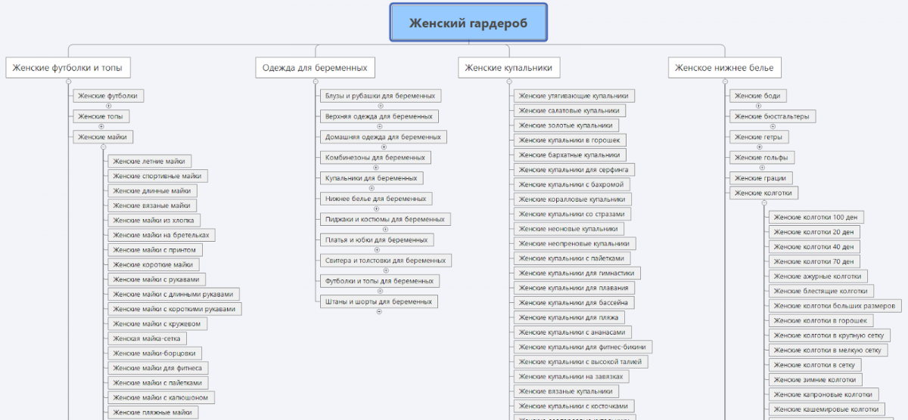

Что такое структура сайта и зачем она нужна?
Структура сайта – это логическое построение всех страниц и разделов ресурса. Благодаря ей пользователь понимает, где располагаются основные разделы сайта, как перемещаться между страницами или вернуться на главную. Визуально структуру можно представить в виде схемы.
Структура сайта имеет важное значение для SEO-оптимизации. От нее зависят следующие показатели:
- Скорость индексации ресурса в Yandex и Google. Сайты с четкой и понятной структурой эффективнее сканируются поисковыми роботами и быстрее ранжируются.
- Распределение ссылочной массы. Грамотно построенная структура позволяет корректно распределить внутренний вес по страницам сайта.
- Улучшение поведенческих факторов. От удобства структуры зависит поведение пользователей внутри веб-сайта и время нахождения на нем.